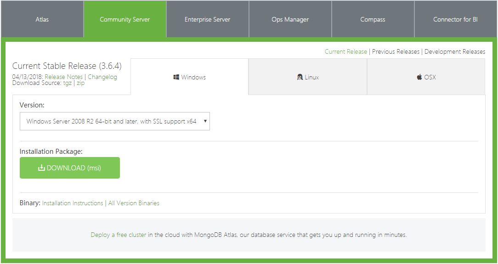
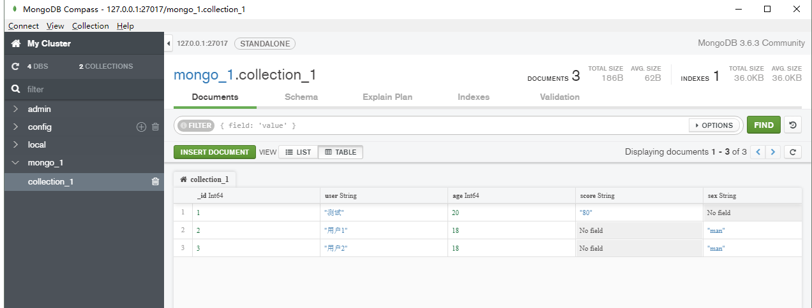
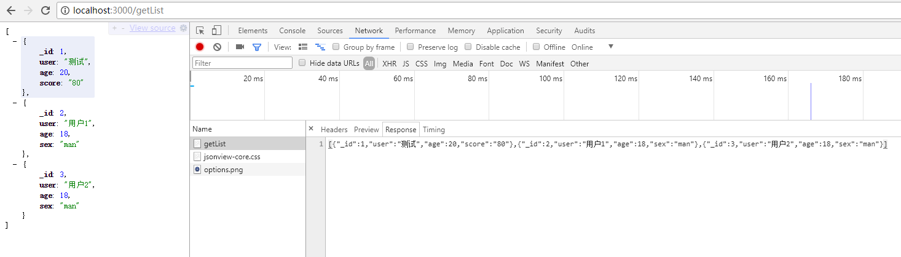

连接Mongodb
安装数据库
- mongodb下载: https://www.mongodb.com
- mongodb compass GUI: https://www.mongodb.com

创建集合

安装 node.js的monk模块
npm install --save monk
npm install --save koa-router
模块介绍
目前 nodejs 连接Mongodb 主要有模块 monk 与 mongoose 而者相比， monk轻量，简单。 mongoose定位在orm,相对复杂，功能更强。初学者建议使用monk，熟悉后可再用mongoose。我们的案例使用的是monk
举个例子
demo源码
https://github.com/findwisdom/koa2-note/blob/master/demo/mongodb/index.js
例子代码
const Koa = require('koa');
const Router = require('koa-router');
const Monk = require('monk');
// 创建一个Koa对象表示web app本身:
const app = new Koa();
const router=new Router();
const db=new Monk('localhost/mongo_1');//链接到库
const students = db.get('collection_1');//表
// 打印request URL:
app.use(async (ctx, next) => {
console.log(`Process ${ctx.request.method} ${ctx.request.url}...`);
await next();
});
// 对于任何请求，app将调用该异步函数处理请求：
router.get('/', async ( ctx ) => {
ctx.response.type = 'text/html';
ctx.body = 'hi'
})
router.get('/getList', async ( ctx ) => {
let st = await students.find();
ctx.response.type = 'application/json';
ctx.body = st;
})
// 加载路由中间件
//解释：app.use 加载用于处理http請求的middleware（中间件），当一个请求来的时候，会依次被这些 middlewares处理。
app.use(router.routes());
// 在端口3000监听:
app.listen(3000, () => {
console.log('[myapp]已经运行，端口为300')
})
启动例子
node index.js
访问页面
